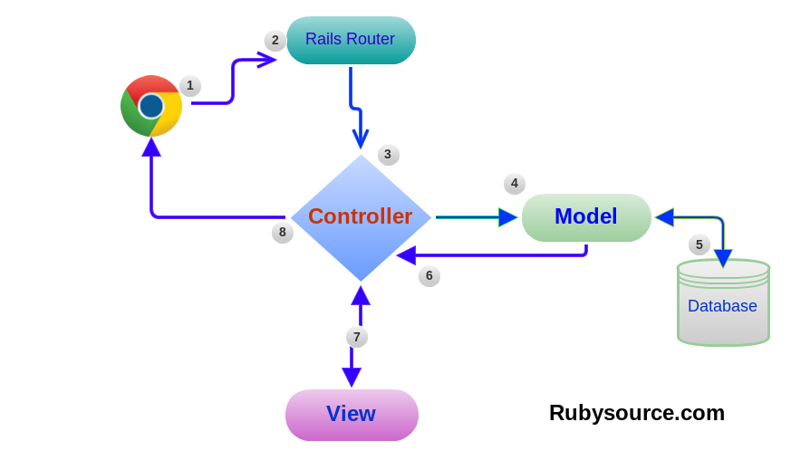
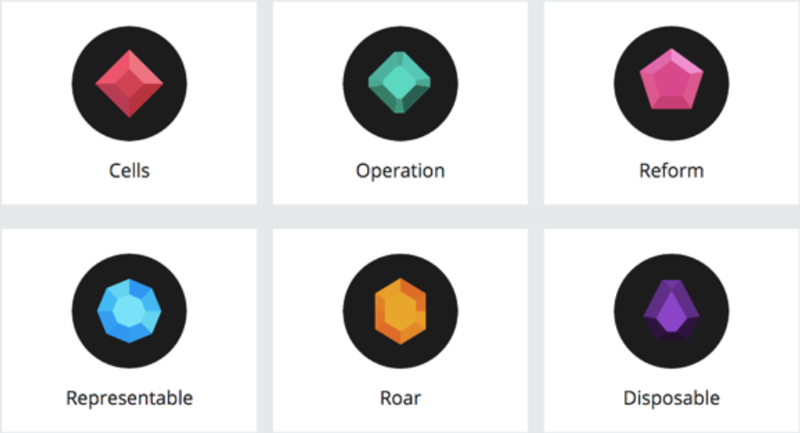
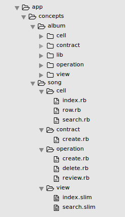

An Introduction to
Trailblazer
A High-Level Architecture For The Web
KW Ruby – March 21st, 2017
Karim Tarek
Freelance web developer
Let's talk about
M V C
What is it?
“Model–View–Controller (MVC) is a software architectural pattern for implementing user interfaces on computers.”
MVC
“It divides a given application into three interconnected parts in order to separate internal representations of information from the ways that information is presented to and accepted from the user.”
MVC
“The MVC design pattern decouples these major components allowing for efficient code reuse and parallel development.”
MVC in action
So basically...
MVC is
Is MVC...
the solution for all things?

The reality is
“For every Rails project, there is exactly two outcomes. Either someone in the team’s an experienced architect and leads the software to an advanced design with service layer, view components, maybe forms, and so on. Or, and that’s the classic way, the project strictly follows the Rails Way and will end up as a code disaster.”
People tried to fix that...
Trailblazer
Is a thin layer on top of Rails and brings a high-level application architecture, decent encapsulation and a new code structure. Here are the main features.
- Logicless models solely focusing on persistence.
- Skinny controllers working as endpoints, only.
- Domain objects for your business logic, known as operations.
- Form objects for deserialisation and validation.
- View models to introduce a widget architecture.
- Representers that parse and render documents for APIs.
- Twin objects for decorating models.
What does that mean for your models?
- Acts as a persistence layer only
- Has only associations and scopes code
- no validation
- no callbacks
- no business logic
Views?
- Logicless
Controllers?
- Only despatch to operations (Every controller action despatch to an operation)
- HTTP specific code (e.g. session code or redirects)
- No business logic
Trailblazer
Has a set of Gems to help with implementing these patterns
Trailblazer
In theory plays nice will all Ruby web frameworks
Trailblazer
Finally know where to put your code!
Operation
Technically, an operation embraces and orchestrates all business logic between the controller dispatch and the persistence layer.
Operation
Let's refactor some code

class AccountsController < ApplicationController
def new
@account = Account.new
end
def create
@account = Account.new(milestone_params)
@account.user = current_user
if @account.save
redirect_to @account, notice: 'Account created!'
else
render :new
end
end
private
def account_params
params.require(:account).permit(:name, :type)
end
end
/app/controllers/accounts_controller.rb
class Account < ActiveRecord::Base
belongs_to :user
validates_presence_of :name, :user
end
/app/models/account.rb
New Account
<%= form_for(@account) do |f| %>
<%= f.label :name %>
<%= f.text_field :name %>
<%= f.label :type %>
<%= f.text_field :type %>
<%= f.submit %>
<% end %>
<%= link_to 'Back', things_path %>
/app/views/accounts/new.html.erb
class AccountController < ApplicationController
def new
form Account::Create
end
def create
run Account::Create do |op|
return redirect_to op.model, notice: 'Account created!'
end
render :new
end
private
def process_params!
params.merge!(current_user: current_user)
end
end
/app/controllers/accounts_controller.rb
class Account < ActiveRecord::Base
belongs_to :user
end
/app/models/account.rb
class Account < ActiveRecord::Base
class Create < Trailblazer::Operation
include Model
include Trailblazer::Operation::Policy
model Account, :create
policy Account::Policy, :create?
contract do
property :name
property :user
property :type
validates :name, presence: true
validates :user, presence: true
end
def process(params)
@model.user = params[:current_user]
validate(params[:account]) do |f|
f.save
end
end
end
end
/app/concepts/account/operation/create.rb
class Account::Policy
attr_reader :user, :account
def initializer(user, account)
@user, @account = user, account
end
def create?
user.present?
end
end
/app/concepts/account/policy.rb
New Account
<%= form_for(@form) do |f| %>
<%= f.label :name %>
<%= f.text_field :name %>
<%= f.label :type %>
<%= f.text_field :type %>
<%= f.submit %>
<% end %>
<%= link_to 'Back', things_path %>
/app/views/accounts/new.html.erb
Why you should consider Trailblazer?
- It forces you to do the right things, until you learn them (especially for rookies)
- For a faster onboarding for new developers
- If you are not sure where to put new logic
When and where to use Trailblazer?
- New projects that will need to scale
- Existing large projects that use patterns inconsistently
- Refactoring legacy code
What's not so-great about Trailblazer?
- The learning curve